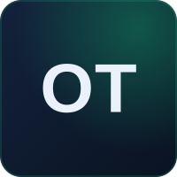
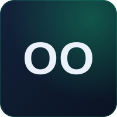
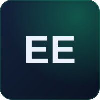
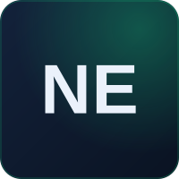

BuildSafe NG is construction-compliance and governance infrastructure for Nigeria — built so that what's approved is what gets built, and everyone with something at stake can prove it.
To replace Nigeria's construction trust deficit with verifiable proof — giving regulators, developers and investors a single source of truth from groundbreaking to handover.
— The reason BuildSafe NG existsNigeria's construction sector — Lagos especially — runs on a deficit of trust. Frequent building collapses from poor supervision. Weak enforcement of approved plans. Regulators with limited visibility during construction. Diaspora investors funding projects from abroad with no reliable way to verify what's rising on their land.
The result is fraud, mismanagement, and a public that has learned to distrust both builders and the systems meant to police them. We started BuildSafe NG to fix the root cause: make the truth of a construction project impossible to hide and easy to verify.
 Lagos, Nigeria
Lagos, Nigeria
To make construction compliance continuous, visible and verifiable — so trust is demonstrated through evidence rather than assumed, and the gap between approved plans and real buildings disappears.
A Nigeria where no investor funds blind, no regulator oversees in the dark, and no building rises off-plan — where "Trust, Verified." is the default standard for how things get built.
Not slogans — the criteria we hold ourselves to. If something fails one of these, we rework it.
We exist to fight fraud and opacity. We hold ourselves to the same standard we ask of the sector.
Proof shown, not asserted. Open audit trails and live verification are the product, not the marketing.
Every stage is signed, time-stamped and immutable — so responsibility is always clear and traceable.
Institutional-grade in everything — because credibility is earned through quality, never claimed.
Track, verify and resolve compliance at every construction stage with geo-tagged, evidence-based proof and an immutable audit trail.
How it worksDesigned around LASBCA and LASPPPA workflows, so oversight and enforcement fit into existing regulatory processes.
For governmentA Victoria Island venue where institutions watch the platform work in real time — and trust becomes a handshake.
Visit the officeAfter watching avoidable building collapses and stalled diaspora projects, our founders asked a simple question: why can't anyone reliably see what's being built?
We built Track → Verify → Resolve — geo-tagged, stage-by-stage verification anchored to an immutable audit trail, and ran our first pilot inspections.
We aligned the platform to LASBCA and LASPPPA workflows and crossed 12,480 verified inspections across 340+ monitored projects.
We opened our Victoria Island Experience & Demonstration Centre — one coherent front door, online and in person, carrying the same promise: Trust, Verified.
A multidisciplinary team — backgrounds spanning HR, medicine, IT, architecture, construction, finance and people relations. Because trust is built by people, not software.
Keeps the platform and its encrypted, immutable audit trail running and reliable.

Brings site know-how that grounds every compliance call in what's really built.

Reads the plans so the platform always knows what "as-approved" truly means.

Stewards pricing, statutory compliance and the numbers behind the model.

Brings a clinician's rigour to evidence, accuracy and duty of care.
Holds the stakeholder relationships where trust is won or lost.
Guides the team and holds the standard high — Trust, Verified.
Whether you're a regulator, developer or investor — see what verifiable construction looks like.